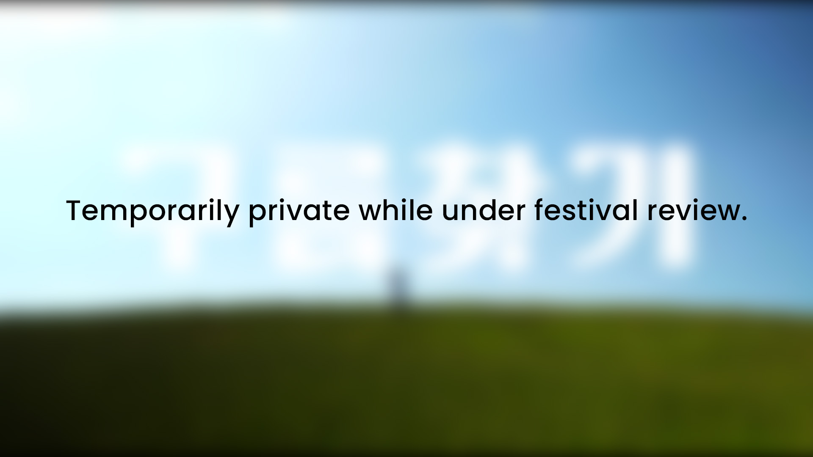
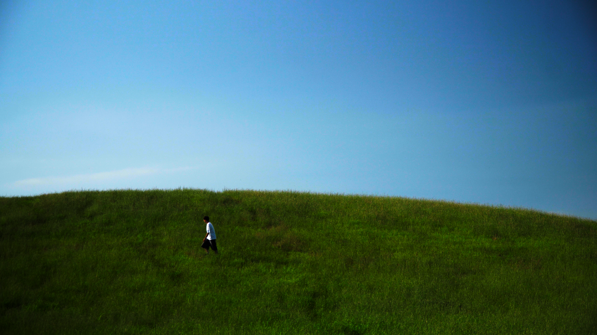
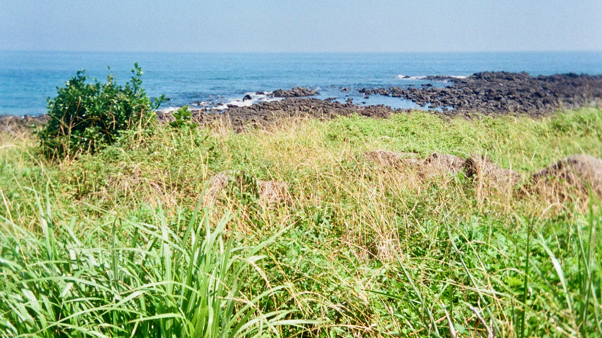
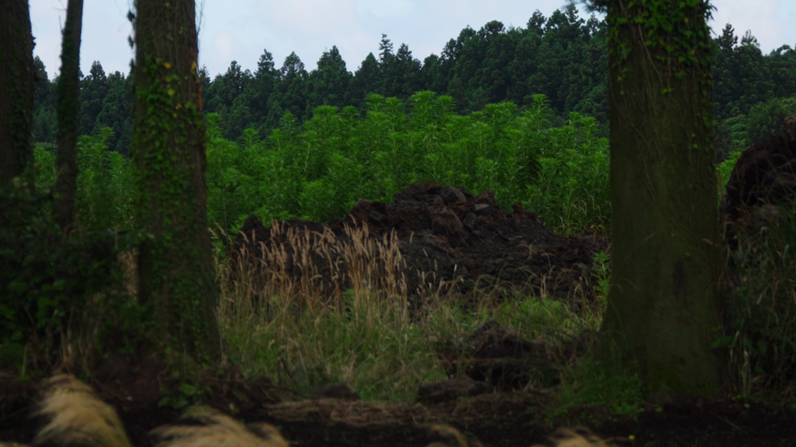

After losing eight years of memories when a social media account is suddenly erased, a filmmaker retraces past and imagined journeys across Korea—through clouds, coastlines, and silence—to explore how memory, voice, and identity can exist beyond the digital archive.
I'm no longer searching for lost records. I'm looking for a new future. One day, the right side of my face suddenly went numb. I stopped seeing people. I avoided them. I spent a lot of time alone. I thought of my father—he too once lost movement in his face, but still left for work every morning and came home to us. That quiet strength has stayed with me.

At night, I sang in the school studio and uploaded videos. People only talked about the singing. No one asked about my face.
But I am not a face. I am not an influencer. I am a voice. I am presence. I am feeling. I am conversation.
The cloud I've lost isn't just data. It's everything I see, everything I say, everything I feel. It's my perspective. My language. My way of being with others.
This project is the journey to find that cloud again. Or maybe, it's not about finding what was lost—but about creating something new from the beginning.
My art is the act of veiling love. Because I have been deeply loved, the love I hold within is vast. I peel away the old veils, only to carefully drape new ones over it again.


Through life and nature, through hardship and pain, the place I arrive at is always love. When all the veils are shattered, what remains—solid and magnificent—is love.
Perhaps love is the answer to every question in the world. Even my lost cloud may have been just another veil, broken for the sake of love.